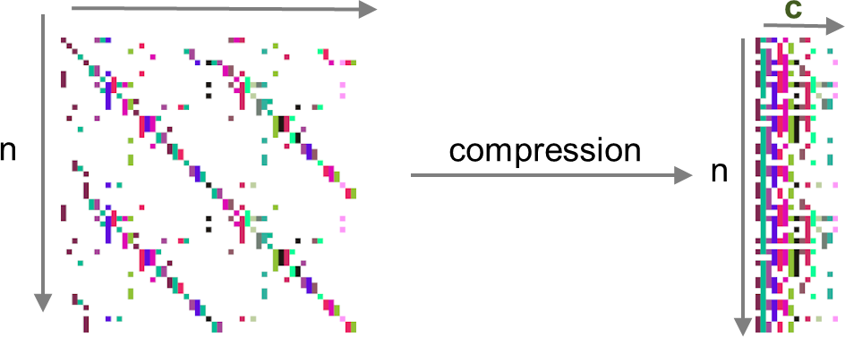
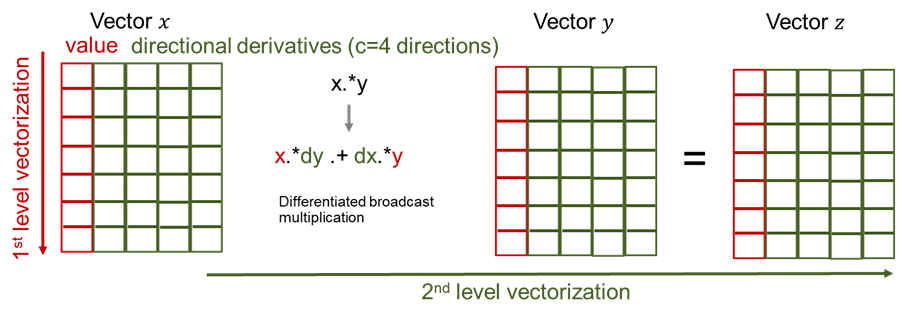

AutoDiff
Overview
Given a set of equations F(x) = 0, the Newton-Raphson algorithm for solving nonlinear equations (see below) requires the Jacobian J = jacobian(x) of F. At each iteration a new step dx is computed by solving a linear system. In our case J is sparse and indefinite.
go = true
while(go)
dx .= jacobian(x)\f(x)
x .= x .- dx
go = norm(f(x)) < tol ? true : false
endThere are two modes of differentiation called forward/tangent or reverse/adjoint. The latter is known in machine learning as backpropagation. The forward mode generates Jacobian-vector product code tgt(x,d) = J(x) * d, while the adjoint mode generates code for the transposed Jacobian-vector product adj(x,y) = (J(x)'*y). We recommend @griewank2008evaluating for a more in-depth introduction to automatic differentiation. The computational complexity of both models favors the adjoint mode if the number of outputs of F is much smaller than the number of inputs size(x) >> size(F), like for example the loss functions in machine learning. However, in our case F is a multivariate vector function from $\mathbb{R}^n$ to $\mathbb{R}^n$, where $n$ is the number of buses.

To avoid a complexity of $\mathcal{O}(n) \cdot cost(F)$ by letting the tangent mode run over all Cartesian basis vectors of $\mathbb{R}^n$, we apply the technique of Jacobian coloring to compress the sparse Jacobian J. Running the tangent mode, it allows to compute columns of the Jacobian concurrently, by combining independent columns in one Jacobian-vector evaluation (see \autoref{fig:coloring}). For sparsity detection we rely on the greedy algorithm implemented by SparseDiffTools.jl.
Given the sparsity pattern, the forward model is applied through the package ForwardDiff.jl. Given the number of Jaocbian colors $c$ we can build our dual type t1s with c directions:
t1s{N} = ForwardDiff.Dual{Nothing,Float64, N} where N}Note that a second-order type t2s can be created naturally by applying the same logic to t1s:
t2s{M,N} = ForwardDiff.Dual{Nothing,t1s{N}, M} where M, N}Finally, this dual type can be ported to both vector types Vector and CuVector:
T = Vector{Float64}
T = Vector{t1s{N}}}
T = CuVector{t1s{N}}}Setting T to either of the three types allows us to instantiate code that has been written using the broadcast operator .
x .= a .* bor accessed in kernels written for KernelAbstractions.jl like for example the power flow equations (here in polar form):
@kernel function residual_kernel!(F, v_m, v_a,
ybus_re_nzval, ybus_re_colptr, ybus_re_rowval,
ybus_im_nzval, ybus_im_colptr, ybus_im_rowval,
pinj, qinj, pv, pq, nbus)
npv = size(pv, 1)
npq = size(pq, 1)
i = @index(Global, Linear)
# REAL PV: 1:npv
# REAL PQ: (npv+1:npv+npq)
# IMAG PQ: (npv+npq+1:npv+2npq)
fr = (i <= npv) ? pv[i] : pq[i - npv]
F[i] -= pinj[fr]
if i > npv
F[i + npq] -= qinj[fr]
end
@inbounds for c in ybus_re_colptr[fr]:ybus_re_colptr[fr+1]-1
to = ybus_re_rowval[c]
aij = v_a[fr] - v_a[to]
coef_cos = v_m[fr]*v_m[to]*ybus_re_nzval[c]
coef_sin = v_m[fr]*v_m[to]*ybus_im_nzval[c]
cos_val = cos(aij)
sin_val = sin(aij)
F[i] += coef_cos * cos_val + coef_sin * sin_val
if i > npv
F[npq + i] += coef_cos * sin_val - coef_sin * cos_val
end
end
endThese two abstractions are a powerful tool that allow us to implement the forward mode in vectorized form where the number of directions or tangent components of a tangent variable are the number of Jacobian colors. We illustrate this in \autoref{fig:simd} with a point-wise vector product x .* y

This natural way of computing the compressed Jacobian yields a very high performing code that is portable to any vector architecture, given that a similar package like CUDA.jl exists. We note that similar packages for the Intel Compute Engine and AMD ROCm are in development called oneAPI.jl and AMDGPU.jl, respectively. We expect our package to be portable to AMD and Intel GPUs in the future.
Description
ExaPF.AD.AbstractADFramework — TypeAbstractADFrameworkAutomatic differentiation for the compressed Jacobians of the constraints g(x,u) with respect to the state x and the control u (here called design).
TODO: Use dispatch to unify the code of the state and control Jacobian. This is currently not done because the abstraction of the indexing is not yet resolved.
API Reference
ExaPF.AD.StateJacobianAD — TypeStateJacobianADCreates an object for the state Jacobian
J::SMT: Sparse uncompressed Jacobian to be used by linear solver. This is either of typeSparseMatrixCSCorCuSparseMatrixCSR.compressedJ::MT: Dense compressed Jacobian used for updating values through AD either of typeMatrixorCuMatrix.coloring::VI: Row coloring of the Jacobian.t1sseeds::VP: The seeding vector for AD built based on the coloring.t1sF::VD: Output array of active (AD) type.x::VT: Input array of passive type. This includes both state and control.t1sx::VD: Input array of active type.map::VI: State and control mapping to arrayxvarx::SubT: View ofmaponxt1svarx::SubD: Active (AD) view ofmaponx
ExaPF.AD.DesignJacobianAD — TypeDesignJacobianADCreates an object for the control Jacobian.
J::SMT: Sparse uncompressed Jacobian to be used by linear solver. This is either of typeSparseMatrixCSCorCuSparseMatrixCSR.compressedJ::MT: Dense compressed Jacobian used for updating values through AD either of typeMatrixorCuMatrix.coloring::VI: Row coloring of the Jacobian.t1sseeds::VP: The seeding vector for AD built based on the coloring.t1sF::VD: Output array of active (AD) type.x::VT: Input array of passive type. This includes both state and control.t1sx::VD: Input array of active type.map::VI: State and control mapping to arrayxvarx::SubT: View ofmaponxt1svarx::SubD: Active (AD) view ofmaponx
ExaPF.AD.myseed_kernel_cpu — Functionmyseed_kernel_cpuSeeding on the CPU, not parallelized.
ExaPF.AD.myseed_kernel_gpu — Functionmyseed_kernel_cpuSeeding on GPU parallelized over the ncolor number of duals
ExaPF.AD.seeding — Functionseeding(t1sseeds::CuVector{ForwardDiff.Partials{N,V}}, varx, t1svarx, nbus) where {N, V}Calling the GPU seeding kernel
seeding(t1sseeds::Vector{ForwardDiff.Partials{N,V}}, varx, t1svarx, nbus) where {N, V}Calling the CPU seeding kernel
ExaPF.AD.getpartials_cpu — Functiongetpartials_cpu(compressedJ, t1sF)Extract the partials from the AD dual type on the CPU and put it in the compressed Jacobian
ExaPF.AD.getpartials_gpu — Functiongetpartials_gpu(compressedJ, t1sF)Extract the partials from the AD dual type on the GPU and put it in the compressed Jacobian
ExaPF.AD.getpartials — Functiongetpartials(compressedJ::CuArray{T, 2}, t1sF, nbus) where TCalling the GPU partial extraction kernel
getpartials(compressedJ::Array{T, 2}, t1sF, nbus) where TCalling the GPU partial extraction kernel
ExaPF.AD._uncompress — Function_uncompress(J_nzVal, J_rowPtr, J_colVal, compressedJ, coloring, nmap)Uncompress the compressed Jacobian matrix from compressedJ to sparse CSR on the GPU. Only bitarguments are allowed for the kernel. (for GPU only) TODO: should convert to @kernel
ExaPF.AD.uncompress! — Functionuncompress!(J::SparseArrays.SparseMatrixCSC, compressedJ, coloring)Uncompress the compressed Jacobian matrix from compressedJ to sparse CSC on the CPU.
uncompress!(J::CUDA.CUSPARSE.CuSparseMatrixCSR, compressedJ, coloring)Uncompress the compressed Jacobian matrix from compressedJ to sparse CSC on the GPU by calling the kernel _uncompress.
ExaPF.AD.residualJacobianAD! — FunctionresidualJacobianAD!(arrays::StateJacobianAD,
residualFunction_polar!,
v_m, v_a, ybus_re, ybus_im, pinj, qinj, pv, pq, ref, nbus,
timer = nothing)Update the sparse Jacobian entries using AD. No allocations are taking place in this function.
arrays::StateJacobianAD: Factory created Jacobian object to updateresidualFunction_polar: Primal functionv_m, v_a, ybus_re, ybus_im, pinj, qinj, pv, pq, ref, nbus: Inputs both active and passive parameters. Active inputs are mapped toxvia the preallocated views.
residualJacobianAD!(arrays::DesignJacobianAD,
residualFunction_polar!,
v_m, v_a, ybus_re, ybus_im, pinj, qinj, pv, pq, ref, nbus,
timer = nothing)Update the sparse Jacobian entries using AD. No allocations are taking place in this function.
arrays::DesignJacobianAD: Factory created Jacobian object to updateresidualFunction_polar: Primal functionv_m, v_a, ybus_re, ybus_im, pinj, qinj, pv, pq, ref, nbus: Inputs both active and passive parameters. Active inputs are mapped toxvia the preallocated views.